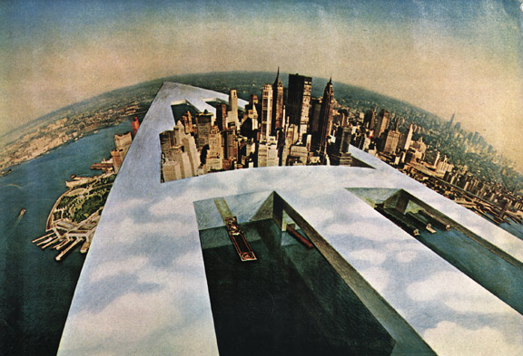
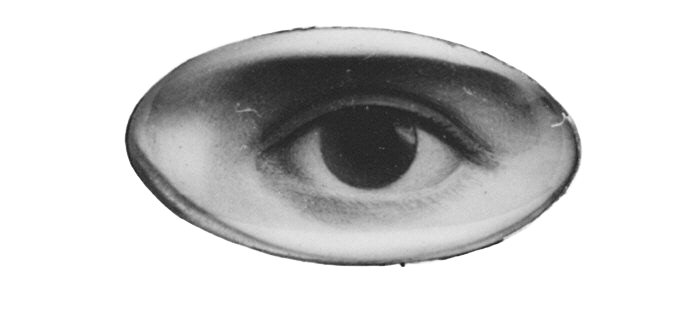

THE CONTINUOUS
MONUMENT
is an illustration crafted by Super studio in 1969 which suggests that by extending a single piece of architecture over the entire world they could establish a unified global order. This monument was strongly influenced by left-leaning, anti-consumerist and anti-capitalist ideas, which were common among radical designers in Italy during the 1960s-1970s. It was a reaction against consumer-focused models, depicting a bizarre and uncomfortable design which exposes the absurdity of “machines for living,” condemning how technology and modernized architecture belittles the beauty in landscape.
A CRITIQUE OF
MODERNISM
The monument's endless grid structure deliberately removes any sense of regional identity, reducing diverse cultures, histories and environments into a single universal system. Through photomontages that place the structure across deserts, oceans, mountains and urban centres, Superstudio highlights the destructive consequences of treating the world as a blank surface for development. The project critiques the idea that design and technology alone can solve social problems, suggesting instead that excessive reliance on rational planning may lead to a loss of individuality, human connection and environmental awareness. By presenting such an extreme vision, Superstudio encourages viewers to question the role of architecture in shaping society and to consider whether endless growth and standardisation truly represent progress.

BUT WHAT IF
THE GRID
NO LONGER COVERED
DESERTS & CITIES
BUT BECAME A
CONTINUOUS NETWORK?
THE GRID
NO LONGER COVERED
DESERTS & CITIES
BUT BECAME A
CONTINUOUS NETWORK?
What if the Continuous Monument wasn’t tangible? What if it wasn’t a physical structure stretching across landscapes, but an invisible system embedded in everyday life? What if the grid no longer occupied deserts and cities, but existed as a continuous network of data, signals, and algorithms? In this interpretation, the monument becomes intangible yet more pervasive, operating through Wi-Fi, GPS, cookies, and digital platforms that quietly track behaviour and movement.

The uniform surface transforms into a seamless digital layer that standardises experiences and connects individuals within an omnipresent structure. The Continuous Monument, reimagined as a continuous network, becomes inescapable not because it is seen, but because it is everywhere, shaping modern life.
Instead of architecture imposing uniformity, it is now data systems, algorithms, and tracking technologies that create a continuous layer of control. Our phones act as entry points into this monument, constantly collecting information about our movements, habits, and preferences.

Cookies, privacy settings, and app permissions function like the modular units of this new monument. Each acceptance of “Allow tracking” or “Accept all cookies” adds another segment to a system that quietly maps behaviour.
What once appeared as a neutral, rational grid in Superstudio’s vision becomes today a network of data points, where users are organised, categorised, and predicted. The structure is no longer visible in landscapes, but embedded within screens, interfaces, and background processes.